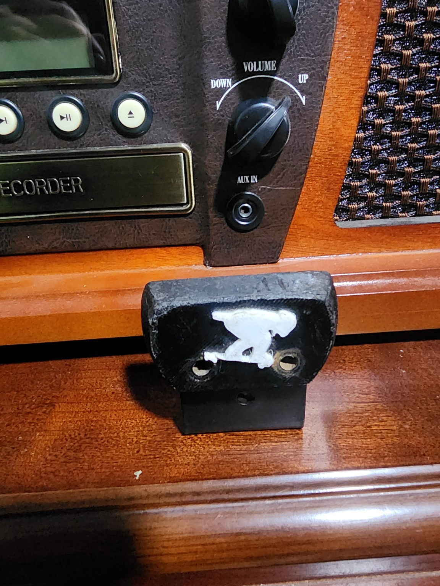
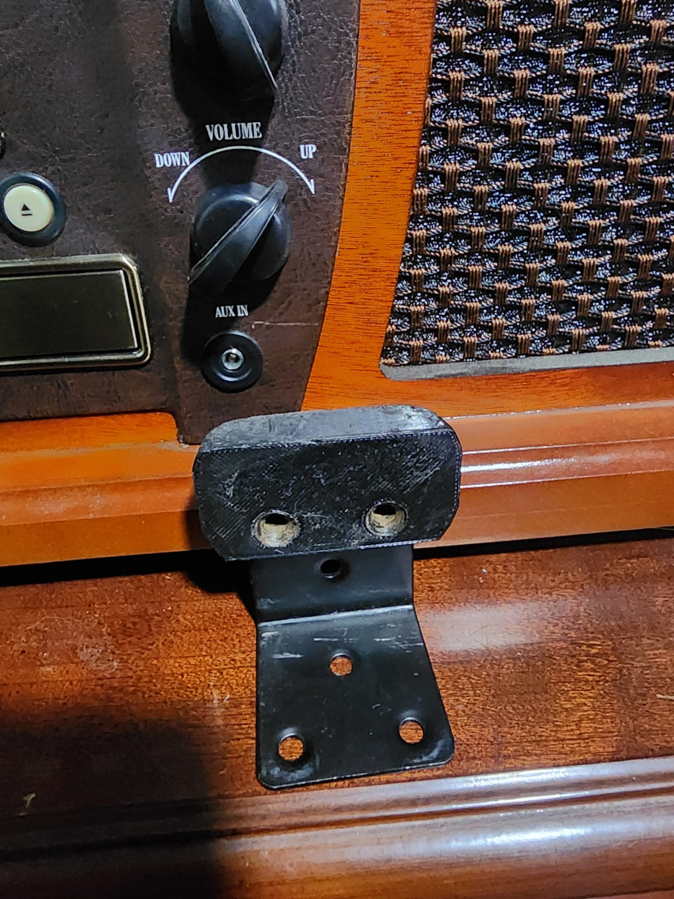
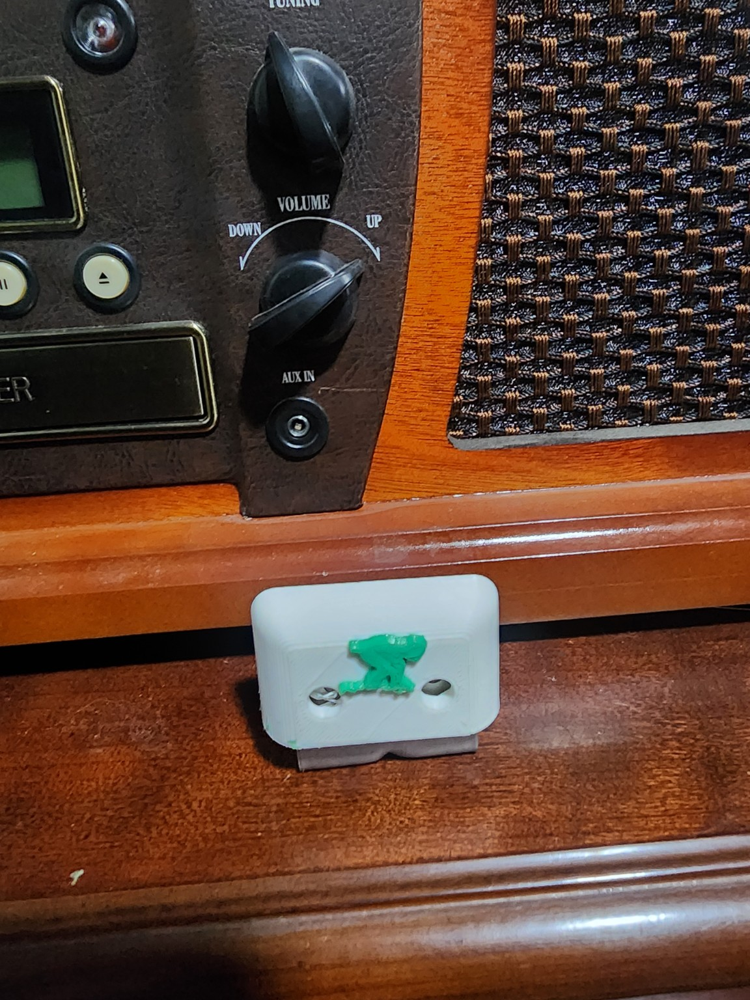
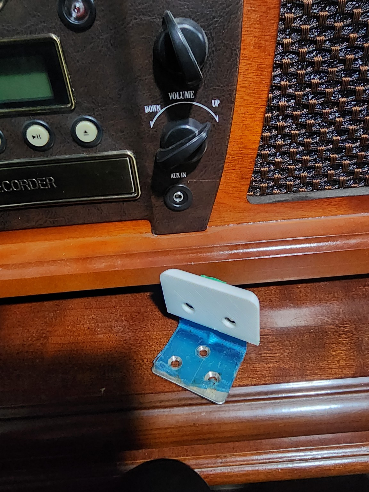

TeamGreen 3D • Longboard gear
Toe Stops
Explore the Toe Stop and Small Toe Bud for your front foot, where your big toe overhangs the board slightly.
Built for your stance.
Toe Stop
Take a closer look at the TeamGreen 3D toe stop. Select either photo to view the full-size original.




TeamGreen 3D • Toe stop products
Small Toe Bud
A smaller toe-stop option for the front of your board. See the white face, green skater detail, and mounting bracket in the photos below. Select either photo for a full-size view.




Position on the board
Up front. At your big toe.
The toe stop sits at the front of the board, where your front foot’s big toe overhangs slightly. It gives your toe a contact point at the edge of your stance.
Find out more
Contact TeamGreen 3D to discuss placement, fit on your board, and availability.
CONTACT @TEAMGREEN3D